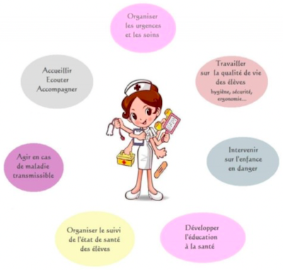

L'infirmerie
Madame Tanvet est présente deux journées par semaine dans le collège : mardi et jeudi de 8h à 16H45. Elle s’inscrit dans la politique générale de l’éducation nationale : promouvoir la réussite scolaire des élèves.
L’infirmière fait partie de l’équipe éducative du collège, elle travaille aussi en étroite collaboration avec le Centre Médico Scolaire (C.M.S) Jacques Prévert de Boissy-Saint-Léger, faisant le lien avec le médecin scolaire.
L’infirmière assure les petits soins et les soins d’urgence. Encadrée par les textes réglementaires, elle a la possibilité de délivrer des médicaments de première nécessité. Les élèves sont accueillis dans ce cadre sur présentation de leur carnet de liaison « passage à l’infirmerie », de préférence pendant les pauses et sur le temps du déjeuner. En dehors du temps de présence de l’infirmière, l’élève peut se présenter au bureau de la C.P.E. Madame Fourmy ou à la Vie scolaire afin d’être pris en charge. Si l’urgence nécessite d’appeler les pompiers pour un transfert à l’hôpital, les parents seront prévenus.
Des temps d’entretien peuvent se prévoir pour instaurer une relation d’aide, avec bienveillance et respect du secret professionnel. Le relais vers d’autres partenaires extérieurs est possible. Le lien peut aussi se renforcer avec l’assistante sociale : Madame Léger, la pyschologue (psyEN) : Madame Lévy ainsi que l’enseignante référente à la scolarité des élèves handicapés (E.R.S.E.H.) : Madame Clerc selon les besoins.
A noter que la fiche Infirmerie est à rendre à chaque début d’année scolaire : celle-ci permet d’identifier rapidement les problèmes de santé (asthme, allergies, ...) et troubles de l’apprentissage (dyslexie, ...) pour le(s)quel(s) nous vérifions qu’une adaptation est en place si nécessaire. Si l’élève doit prendre un traitement si besoin ou sur le long terme, un Projet d’Accueil Individualisés (P.A.I.) sera établi puis renouvelé en chaque début d’année.
Il appartient aux parents de nous prévenir si un problème apparait en cours d’année : si l’élève requiert d’un traitement pour une courte durée, une autorisation parentale de prise de médicament(s) sur le temps scolaire ainsi qu’une copie de l’ordonnance seront nécessaires...
Les professeurs et l’ensemble de l’équipe éducative sont tenus de faire appel à l’infirmière s’ils ont connaissance d’un problème de santé (physique ou psychologique) d’un élève pour que la situation particulière soit connue et encadrée si besoin pendant le temps de présence au collège
Le suivi des élèves est assuré notamment avec le dépistage des élèves de sixième.
L’infirmière participe aussi aux actions de prévention dans le cadre du projet d’établissement. Cette mission a pour but d’aider les élèves à acquérir des compétences et des connaissances leur permettant de faire des choix en matière de santé. Cette année, cela sera organisé autour de l’alimentation pour la prévention du surpoids et de l’obésité.
